Online Play
Omninet accounts, Progress and Free Mode, the Shop, Arena seasons, Discord battles and local WiFi battles.
Connect menu

Online play starts in Connect, opened from the game's menu. A button that is not available cannot be selected.
| Button | Opens | Available when |
|---|---|---|
| Arena | The Arena hub | Progress Mode, with at least one Digimon in the party |
| Local Battle | DCom battles with a real device, and WiFi battles | At least one Digimon in the party |
| Shop | The Omninet shop | Omninet can be reached |
| CONFIG | The Omninet and Discord accounts | Always |
| DISCORD | Discord battles | A Discord account is linked and the Discord service answers |
| EXIT | Back to the game | At least one module is installed |
The Shop button, and the DCom and WiFi buttons inside Local Battle, show a loading mark while the game checks them and an offline mark when the check fails.
Omninet
Omninet is Omnipet's online service. It keeps your account, coins and purchases, and runs the Shop and the Arena. An account is needed for Progress Mode only: Free Mode, WiFi battles and Discord battles work without one.
Signing in
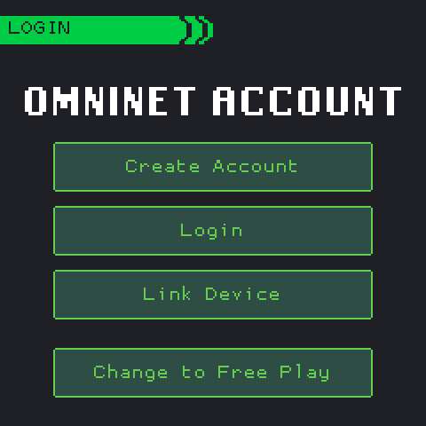
The OMNINET ACCOUNT screen opens when you choose Progress Mode, when Progress Mode starts without a signed-in account, and after DISCONNECT in Connect > CONFIG.
In Progress Mode signing in is required. The screen has no Back button; Change to Free Play switches to Free Mode instead. Without a connection the screen says "No internet connection found."
| Option | You enter | Then |
|---|---|---|
| Create Account | Nickname (3 or more characters), email and password (6 or more characters) | A 6-digit code is sent to the email. Enter it on VERIFY EMAIL. |
| Login | Email and password | A 6-digit code is sent to the email. Enter it on VERIFY LOGIN. |
| Link Device | A 4-character code made in the Module Editor | The game joins the account that made the code. No email step. |
An emailed code expires after 5 minutes; the screen counts down. Resend unlocks only once the code has expired ("Code expired - tap Resend"). Logging in to an account that was never activated sends a new code and opens VERIFY EMAIL ("Account not activated. New code sent.").
Getting a Link Device code
- In the Module Editor, open Omninet > Account (Ctrl+Shift+A) and log in.
- Press Link Game Device, then Generate Code. The editor shows the code and how long it stays valid.
- In the game, choose Link Device, enter the code and press Confirm.
After signing in
- The device stays signed in. Each start in Progress Mode checks it with Omninet. If Omninet cannot be reached, an error screen offers Retry or Free Mode.
- Each account has its own save on the device.
- The coin balance comes from Omninet. Modules the account owns but the device lacks are downloaded.
Connect > CONFIG
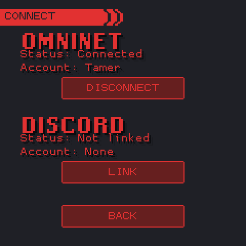
| Item | Shows or does |
|---|---|
| Omninet Status | Checking..., Connected, Available (Omninet answers, no account signed in) or Offline |
| Omninet Account | Your nickname, or None |
| DISCONNECT | Signs this device out of Omninet and opens the sign-in screen |
| SWITCH MODE | Free Mode only: the account line reads "Free Mode" and this button opens the mode choice |
| Discord Status | Linked or Not linked; Account shows the Discord user name |
| LINK / UNLINK | Links a Discord account (see Discord battles) or removes the link from this game |
Progress and Free Mode
The game asks for a mode at the first start. The selection screen calls Progress Mode "Progression Mode".
| Progress Mode | Free Mode | |
|---|---|---|
| Omninet account | Required; checked at every start | None |
| Internet | Needed at start, for the Shop and the Arena | Needed only for the Shop |
| Modules | Those you own. The account's first module is free; later ones are bought with coins. | Every installed module |
| Shop | All sections, priced in coins | MODULES only, free downloads |
| Coins | Earned in play, kept on Omninet | None |
| Training minigames | Dummy; the others are bought in the Shop's GAMEPLAY section | All |
| Arena | Yes | No |
| WiFi and Discord battles | Yes | Yes |
| Save | One per Omninet account | One on the device |
In Progress Mode the egg selection offers only modules you own. With none, the game opens the Shop's MODULES section.
Coins
In Progress Mode these events earn coins. Omninet sets the amounts.
| Event | Paid |
|---|---|
| Unlocking a module item ("... unlocked!") | First time only |
| Discovering a Digimon (a new Digidex entry) | First time per Digimon and version |
| Evolution, Jogress and Armor evolutions included | Every evolution |
| Beating an adventure area's boss | First clear of each area |
| Finishing a module's whole adventure | First time only |
| Arena battles and prizes | See Arena |
Changing mode
- Settings > GAMEPLAY > Change Mode opens the mode choice.
- In Free Mode, Connect > CONFIG > SWITCH MODE does the same.
- Change to Free Play on the sign-in screen switches to Free Mode at once.
When the device already has a signed-in account, choosing Progress Mode offers "Use <name>" or "Another account".
Shop
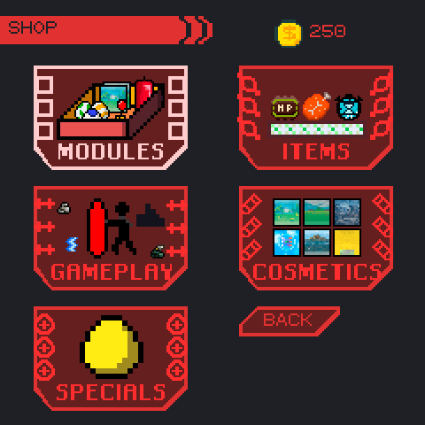
The Shop lists what Omninet offers. Your coins show at the top right ("FREE" in Free Mode).
In Free Mode only MODULES opens, and every module downloads for free.
| Section | Contents | Bought |
|---|---|---|
| MODULES | Modules published on Omninet | Once. The account's first module is free; later ones cost the price shown. |
| ITEMS | Items that go to the inventory | Again, whenever you have the coins |
| GAMEPLAY | Training minigames | Once |
| COSMETICS | Backgrounds | Once |
| SPECIALS | Special unlocks, priced in coins or contribution points | Once |
A module's page shows its author, contributors, last update, description and price. Its button reads Purchase, Download, Update (a newer version is published) or Updated (installed and current). The price line shows "Free", "Price:" with the coins, "Already Owned" or, in Free Mode, "Installed"; during a download it shows the progress.
Arena
The Arena is a season-long competition on Omninet. You register a team; Omninet fights its battles, those you start and those other players start against it, and the game plays each one back. The Arena needs Progress Mode and at least one Digimon in the party.
Seasons
| Rule | Default |
|---|---|
| Season | One week. One season runs at a time. |
| Team | 1 to 3 Digimon. One team per player per season. |
| Modules | Only modules published on Omninet |
| Attacks | 10 a day. The day starts at 00:00 UTC. |
| Charge | 2, for every Digimon. There is no charge minigame. |
| Score | Win +25, loss −12 (never below 0), draw +5 |
| Coins | 1 per battle, attack or defence, any result |
| Prizes | 50, 25 and 10 coins for the three best teams that fought |
A season may change these values and limit the Evolution Stages, Attributes or modules allowed. RULES shows the current season's values.
The hub
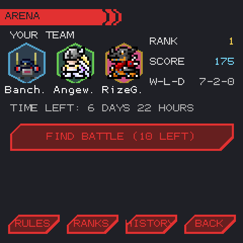
The hub shows your team, its RANK (place / teams), SCORE and record (wins-losses-draws), the time left in the season and FIND BATTLE with the attacks left today.
Below it are the last result ("WIN vs <nickname> +25") and one information line. RULES, RANKS, HISTORY and BACK sit at the bottom.
Without a team the hub shows CREATE TEAM, or SEASON NOT STARTED when no season runs.
| Information line | Meaning |
|---|---|
| "Attacked 3x while away! See HISTORY." | Other players attacked your team since you last opened HISTORY. |
| "Defended 4x, won 2." | Your team's defences this season. |
| "Not attacked yet." | No one has attacked your team. |
| "No attacks left. New ones in 2h 10m." | Today's attacks are used up. |
| "Register a team to battle." | A season runs and you have no team in it. |
Registering a team
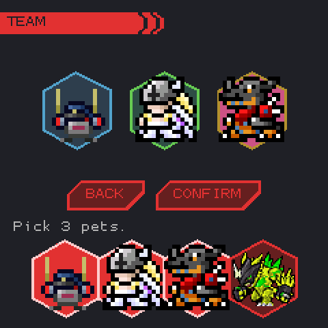
- Press CREATE TEAM.
- Pick Digimon from your party. The status line gives the count ("Pick 1-3 pets.") and any season filter.
- Press CONFIRM. The game says how long the team will be locked ("Locks them in the freezer until OCT 20 14:00. Press again.") and the button reads SURE?.
- Press it again. The hub says "Team registered! Locked until ...".
A Digimon that cannot join is disabled; selecting it shows why.
| Message | Reason |
|---|---|
| "Edited pets aren't allowed" | The Digimon was changed in the debug menu. |
| "Pet is dead" | The Digimon has died. |
| "Pet cannot battle" | It has no power or no attack. |
| "Module not in this arena season" | Its module is not published on Omninet. |
| "Fought last season: evolve it first" | It already fought a season in its current form. |
| "Wrong stage / attribute / module for this season" | The season's filter excludes it. |
The Freezer lock
The team's Digimon stay in your save. They move to the Freezer, locked until the season's end time: their Freezer entry reads "Arena" with the time left instead of Add. Once that time has passed they can leave the Freezer. A Digimon fights one season per form; after a season it must evolve before it can join another.
Battles
- FIND BATTLE spends one attack. Omninet picks the opponent and fights the battle; the game plays it back and returns to the hub with the result.
- The opponent is the team you have met least today, then least this season. Every team is met once before any team is met twice in a day.
- Other players attack your team while you are away. Defences cost no attacks and move both teams' scores.
- Omninet works out each Digimon's power and HP from its species and its current status. Item bonuses do not count.
- A battle can end in a draw.
- Arena battles never injure a Digimon.
Ranks, rules and history
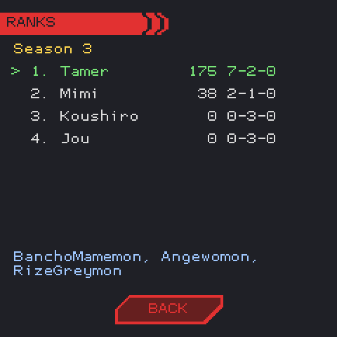
RANKS lists the season's teams: rank, nickname, score and record. Your row is green and selected. The selected team's Digimon show under the list, the season's prizes at the top.
Teams that have fought rank above teams that have not; then score, wins and the earlier team decide.
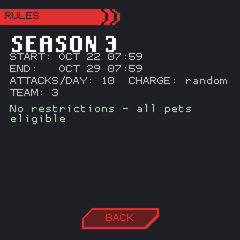
RULES shows the season's name, start and end (local time), attacks per day, charge ("random" when each battle draws one), team size, prizes and filters, or "No restrictions - all pets eligible".
Filters list stages by number: 1 Baby I, 2 Baby II, 3 Child, 4 Adult, 5 Perfect, 6 Ultimate.
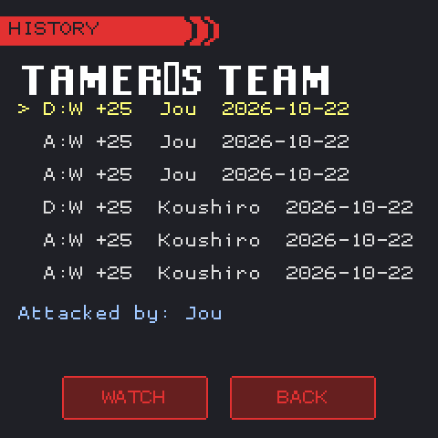
HISTORY lists the team's battles. Each row gives the side (A you attacked, D you were attacked), the result (W, L or D), the score change, the opponent and the date.
The selected battle's opposing team shows under the list. WATCH replays it from your side.
Season end
- When the season ends, the hub says "<season> has ended.", shows the coins waiting and replaces FIND BATTLE with SEASON RESULTS.
- RESULTS shows the final rank (CHAMPION! for first, PODIUM! for second and third), score, record, coins and "Each pet: +N battles, W won".
- Press any key or tap. The coins are added; the hub says "+N coins claimed!".
Each Digimon of the team adds the team's season record to its own battle and win counts, which evolution conditions that count battles use. You must open the results before registering a team in the next season.
Discord battles
Discord battles connect two players over the internet through Omninet's Discord service. They work in both modes and need no Omninet account.
Linking your Discord account
- In Discord, send the bot the command
!link. It sends you a direct message: "Your Pairing Code: XXXX". If it cannot message you, it posts the code in the channel, hidden as a spoiler. - In Omnipet, open Connect > CONFIG and press LINK under Discord.
- Enter the 4 characters and press Confirm. CONFIG then shows "Status: Linked" and your Discord user name.
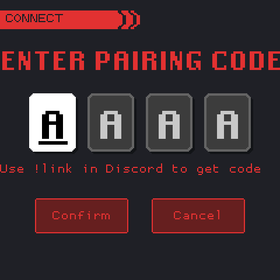
| Message | Meaning |
|---|---|
| "Please enter a 4-character code" | Fewer than 4 characters were entered. |
| "Invalid or expired code" | The service does not know the code: it was mistyped, or a newer !link replaced it. |
| "Discord is offline" | The Discord service cannot be reached, or the server runs without it. |
UNLINK in CONFIG removes the link from this game. !unlink in Discord removes it on the bot's side.
Battling
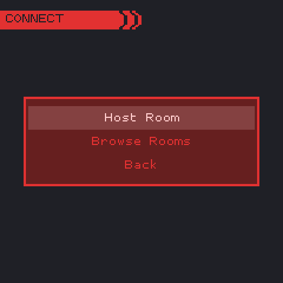
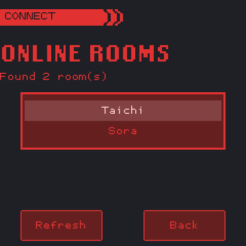
- Open Connect > DISCORD. The button works only when an account is linked and the service answers.
- Choose up to four Digimon and press CONFIRM.
- One player chooses Host Room and waits: "Room Created! Waiting for opponent...".
- The other chooses Browse Rooms. Rooms are listed by the host's Discord name; Refresh searches again. Pick the room.
- On the confirmation screen (ONLINE BATTLE) both players press START.
A Discord battle follows the WiFi battle rules and counts the same way. The versus screen shows both players' names.
WiFi battles
Two Omnipets on the same local network can battle. No internet connection or Omninet account is needed.
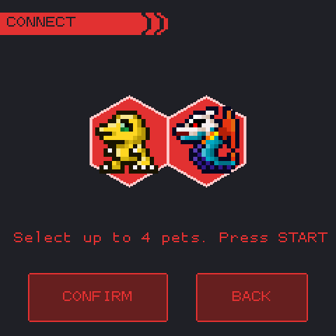
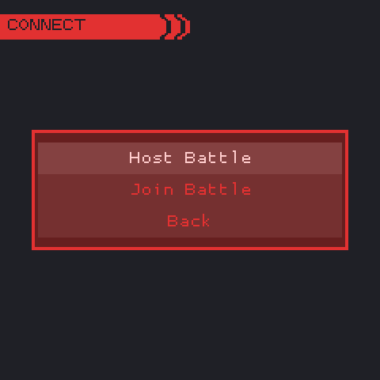
- Open Connect > Local Battle and press the WiFi button. It turns on when the device has a local network address.
- Choose up to four Digimon and press CONFIRM. The list holds the party Digimon that can battle; when Digimon are selected on the main screen, only those.
- One player chooses Host Battle.
- The other chooses Join Battle and picks the host's code from the list.
- Both players press START on the confirmation screen.
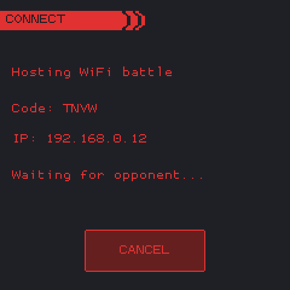
Host Battle shows a 4-character code, the device's IP address and "Waiting for opponent...". CANCEL stops hosting.
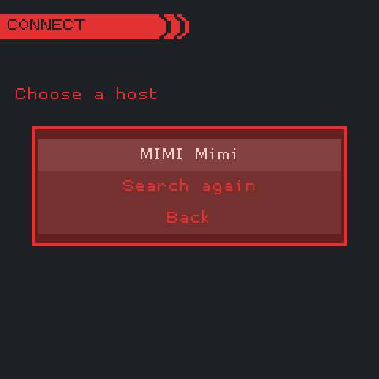
Join Battle searches the network for about three seconds and lists the hosts by code, with the host's Omninet nickname when it is signed in. Search again repeats the search.
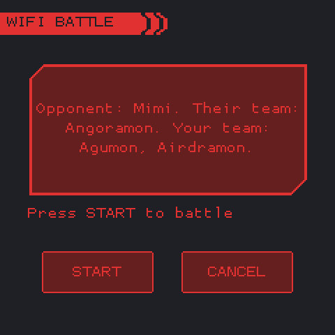
The confirmation screen (WIFI BATTLE, or ONLINE BATTLE for Discord) names the opponent and both teams. The status reads "Connecting...", then "Press START to battle", then "Waiting for opponent..." until the other player presses START too. CANCEL leaves.
Rules
- The battle uses the Arena's rules: no charge minigame, every Digimon at the same charge, and a battle can end in a draw.
- The host's game fights the battle and sends it to the other game. Each game plays it from its own side.
- The opponent's module does not have to be installed.
- Your own Digimon fight, so the battle counts like any other connection battle: battle and win counts, the battle cost, Connect Points on modules that have them, and injuries.
Messages
| Message | Meaning |
|---|---|
| "No host found" | No host answered the search. |
| "Could not connect" | The host was found, but the connection failed. |
| "Cannot host on this network" | This device could not open a connection. |
| "Others cannot find this game" | Another program holds the search port, UDP 47555. |
| "Different game version" | The two games use different battle links. Use the same Omnipet release on both. |
| "Their team cannot battle" | The opponent's team was refused. |
| "The opponent left" | The other player cancelled, or the connection dropped. |
| "Battle could not be read" / "Battle could not be shown" | The battle the host sent could not be played. |
Contribution points
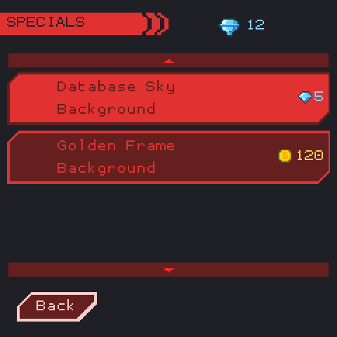
Contribution points are a second balance, kept apart from coins and shown with a diamond icon.
They are earned by contributing to the Digimon Database: each contribution gives 1 point, 2 for an entry flagged as needing data. Omninet credits the points to the account whose email matches the one sent with the contribution. Points for an email that has no account yet are kept until an account with that email exists.
They are spent in the Shop's SPECIALS section, which shows the balance at the top right and reads it again each time it opens. Each Special is priced in coins (coin icon) or in contribution points (diamond) and is bought once. A background Special is downloaded with the other bought backgrounds and chosen in Settings > Backgrounds. SPECIALS needs Progress Mode.